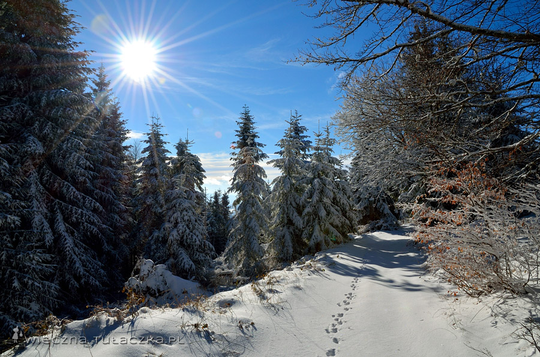
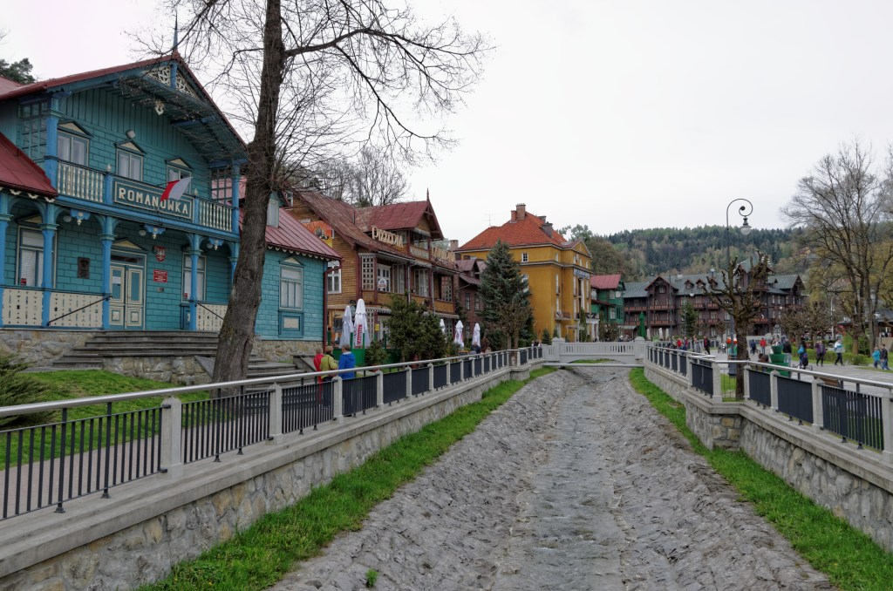
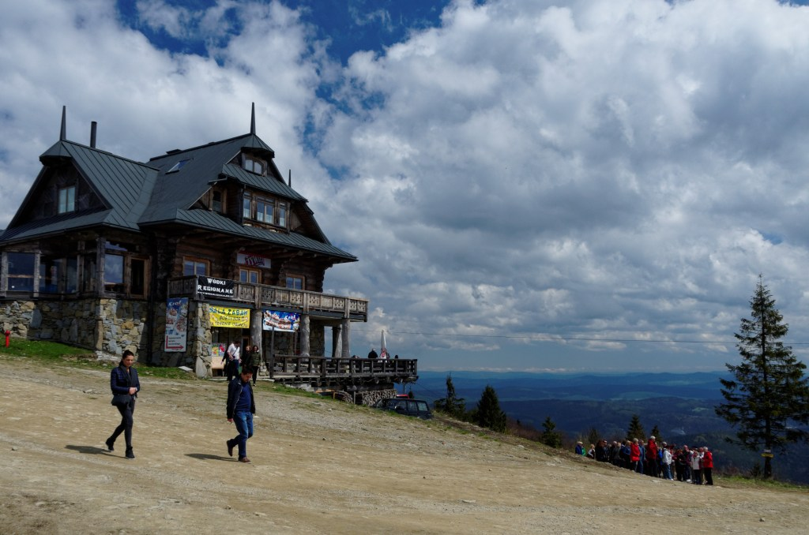
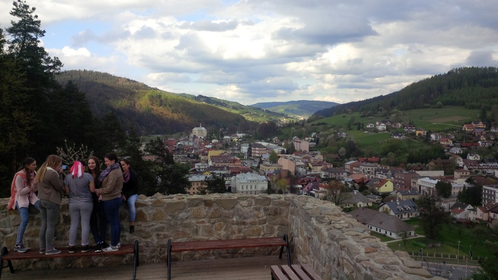
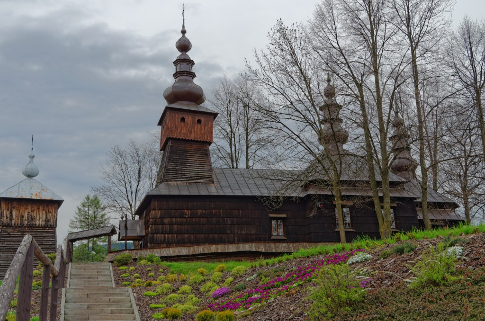
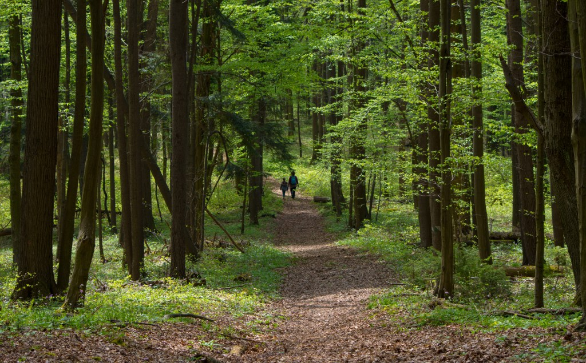

Ferie zimowe 2022 - Beskid Sądecki
Znajduje się w Karpatach Zachodnich.

Warto odwiedzić:
Krynica Zdrój

Krynica-Zdrój – miasto w województwie małopolskim, w powiecie nowosądeckim, siedziba gminy miejsko-wiejskiej Krynica-Zdrój.
Jaworzyna Krynicka

Jaworzyna Krynicka lub Jaworzyna – szczyt w Beskidzie Sądeckim, znajdujący się w Krynicy-Zdroju, na obszarze gminy Muszyna.
Zamek w Muszynie

Zamek w Muszynie – ruiny średniowiecznego zamku w Muszynie w powiecie nowosądeckim w województwie małopolskim.
Cerkiew w Jastrzębiku

Zamek w Muszynie – ruiny średniowiecznego zamku w Muszynie w powiecie nowosądeckim w województwie małopolskim.
Las Lipowy

Lipowy Las – wieś w Polsce położona w województwie mazowieckim, w powiecie ostrołęckim, w gminie Baranowo.